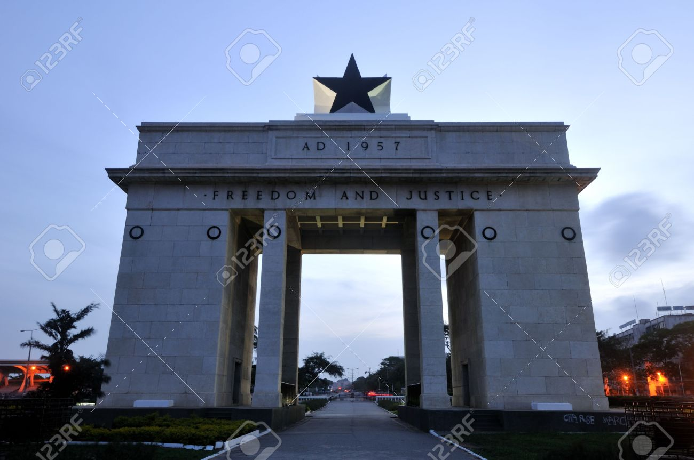
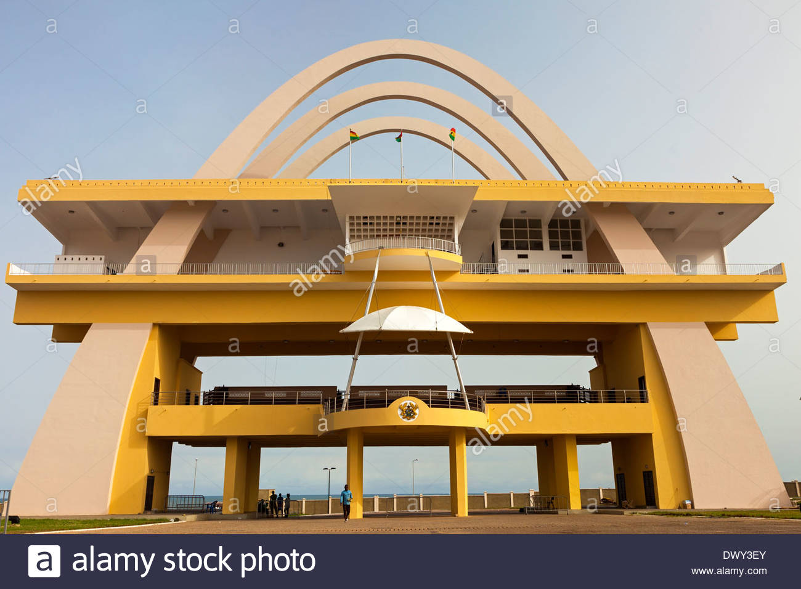
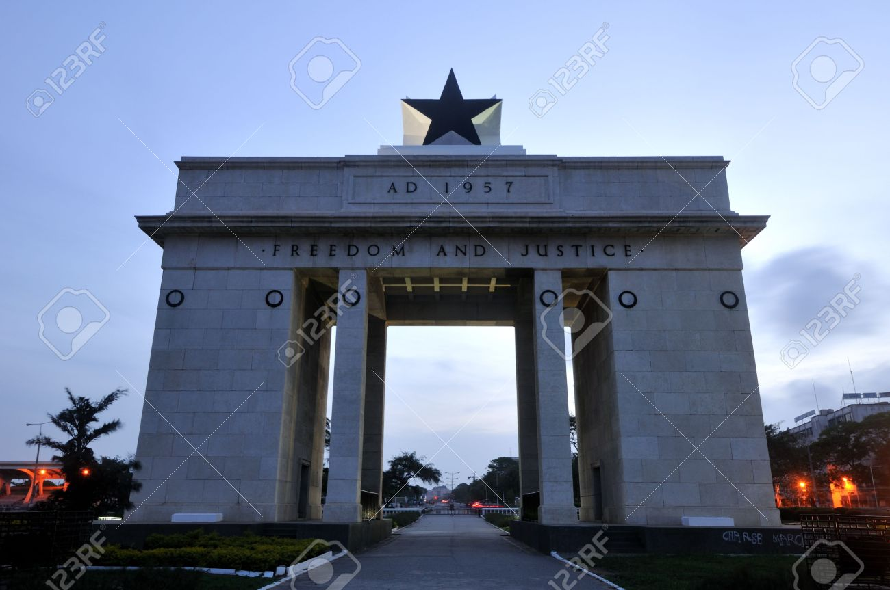
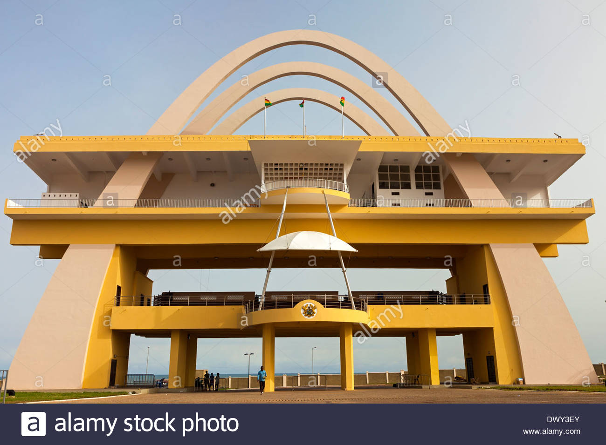

Guide touristique du Ghana
Le monument de l'Independance du Ghana
Le Mausolée de Kwame Nkrumah (en anglais : Kwame Nkrumah Mausoleum) et son parc commémoratif sont situés dans le sud de la ville d'Accra. Le monument est dédié à Kwame Nkrumah, premier président du Ghana et grand acteur de l'indépendance du pays, ancienne colonie britannique. Il fut inauguré en 1992.
Visitons les plages du Ghana
Le Ghana est l’une des économies les plus pacifiques et les plus dynamiques d’Afrique. Le Ghana est orné de 540 km de côtes magnifiques et sablonneuses. La majeure partie est peu développée et beaucoup de ses plages sont comme des paradis privés qui attendent d’être explorés. Il a une variété d’attractions qui en font une grande destination touristique. L’écotourisme est devenu populaire au cours des dernières années et il y a maintenant quelques éco-lodges dans la région d’Axim. Si vous avez de la chance, vous pouvez observer des tortues en train de nicher ou même voir des baleines migratrices traverser les eaux côtières du ghana.
FREEDOM AND JUSTICE
L’origine du nom de Ghana viendrait de l’ancien empire du Ghana, mais en réalité celui-ci était situé plus au nord, dans les régions sahéliennes du Sénégal, de la Mauritanie et du Mali. Les États les plus anciens sur le territoire ghanéen furent les royaumes de Fagomba et de Mamprusi; ceux-ci furent prospères jusqu’au XIIIe siècle, puis ils furent dominés par les royaumes du Dagomba et du Gondja à partir du XIVe siècle. C’est vers cette époque que des immigrants parlant une langue akan, dont les Achanti et les Fanti, quittèrent la savane et vinrent établir leur suprématie au sud de la ligne des forêts, formant une série de petits royaumes. Dès le début du XVe siècle, ces petits États pratiquèrent le commerce avec les peuples subsahariens vivant plus au nord.
 



Venez visiter le Ghana